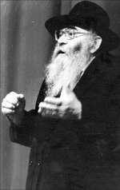

The Man Who Began the Moshiach Campaign Over Sixty Years Ago
In advance of the Kinus HaShluchim, we spoke to Rabbi Zalman Abelsky, a Chassid who went on a dangerous shlichus during the days of the Rebbe Rayatz. His shlichus today is as chief rabbi of Moldavia. We asked him questions about the avodas ha’shlichus at this time, in light of the Rebbe’s sicha to t

I have been in Moldavia since Chanuka 5749, right after the onset of perestroika. People from Ezras Achim asked me to go on shlichus there and I asked the Rebbe who said: haskama, bracha v’hatzlacha.
You were no youngster at that time. At that age, to start anew in a primitive place, when anybody your age would start looking to take it easy – where did you get the strength for this?
I think that as a result of hiskashrus to the Rebbe, every Jew, no matter who he is, should say every day [M. Z.: he said this with a tune:] As long as my neshama is within me, I thank you for the privilege of being a Chassid and mekushar and doing what the Rebbe wants. This ought to be the goal of a Chassid, to do what the Rebbe wants; other things are less important.
Boruch Hashem, after all these years, we’ve accomplished a lot. Any young man can come here to live with hardly any material or spiritual problems, even with young children. It took a lot of work.
At the Kinus HaShluchim 5752, the Rebbe said that the only shlichus that remains is to prepare oneself and one’s city to greet Moshiach. Was that a surprise to you?
A surprise? Why should it have been a surprise? It’s the topic that the Rebbe spoke about in his very first maamer. And since then, we have seen that all the campaigns and activities that the Rebbe did and led were to prepare the world for Moshiach.
I remember that after the Rebbe’s first maamer (said on Yud Shevat 5711) arrived in Eretz Yisroel, I was in Kfar Chabad; it was then that I immediately realized what the Rebbe was getting at – activities that would bring the Geula! From this I understood that the Rebbe would bring the Geula, for he is Moshiach. I began publicizing this at that time.
Whoever examines that first maamer sees how the Rebbe speaks about how our shlichus is to draw the Sh’china down from the seven heavens to earth, as it was with the seven tzaddikim until Moshe Rabbeinu. The Rebbe said we are in the Ikvisa d’Meshicha and the end of galus. Can this be interpreted in any other way?
What did people think of your conclusions at that time?
Some accepted it and some didn’t. However, every week I wrote to the Rebbe and told him everything I was doing in hafatza. I wrote that wherever possible, I publicized that the Rebbe is Moshiach. I didn’t just announce this; I said it in places where I saw that this would be accepted, and I said it with lengthy explanations so people could understand it intellectually. Obviously, there were people who opposed talk like this, but over the years it penetrated more and more.
What was the Rebbe’s reaction to this?
The Rebbe always responded that he had received my letters, and encouraged me to continue my work. The Rebbe knew precisely what I was doing.
On 11 Nissan 5712/1952, I arranged a farbrengen in Kfar Chabad in honor of the Rebbe’s birthday. Back then, this day was not celebrated. I first wrote to the Rebbe and he gave his consent and asked that matza be distributed at the farbrengen.
At the farbrengen, I prepared a telegram of brachos to the Rebbe, which was signed by Chassidim in Kfar Chabad. In it, we wrote explicitly about the Rebbe “and he will redeem us speedily in our days.” Although there were Chassidim who did not accept this way of talking and made a whole story out of it (back then already!), the Rebbe’s answer arrived swiftly: “Whoever blesses is blessed.”
Of course you know that years later some Chassidim publicized the same message and got it over the head from the Rebbe.
There were those who said what I said and the Rebbe told them not to publicize it. I think I am the only one who was encouraged in this by the Rebbe. I don’t know why, but the most obvious explanation is that I did it very cautiously. In places where I saw that it might not be well received, I kept quiet. I can tell you that it was received better “outside” than by the Chassidim.
In 5711, I worked for Pe’ilim-Yad L’Achim for a while. We young bachurim would gather in the shul of the old age home on Allenby Street in Tel Aviv, where we would get our marching orders for our next activities. Until the meeting got underway, we would talk amongst ourselves. Since some of us were Lubavitchers and some were from Litvishe yeshivos, the conversations were always interesting.
One time, one of the older bachurim said to me that he had heard that we refer to the Rebbe as Moshiach and asked what I had to say about this. I responded: I’m surprised at you. Why do you need to know what we, Chabad Chassidim, say and what our opinion is? A Ben Torah like you ought to know what the Torah says.
He was very taken aback by this and asked me what I meant. For three quarters of an hour I told him about what it says in the Prophets, Gemara, Rishonim, and various halachic works. He and his friends asked questions and I answered, to the best of my ability. At the end of the conversation, he said he must ask senior Lubavitchers whether they agreed with everything I said, and if they did, he would also become a Lubavitcher.
Since I knew what the elder Chassidim would say, and that they would never admit to this, I tried to dissuade him. I said: I am talking to you about what prophets said and the views of the Tanaim and Amoraim, Rishonim and great men, and you want to know what ziknei Chabad say? They are good and fine but they are not prophets, nor are they Tanaim and Amoraim. I am talking about the Gemara and you are talking about ziknei Anash!
After the Kinus HaShluchim 5752, you returned to Moldavia with a new focus.
Yes. As I said, it wasn’t new to me in shlichus, but after that sicha it became much more intensified. In the newspaper that we publish for the k’hilla, Istruki (wellsprings; roots) we began to expand on the topic even more than before. In the places where I occasionally speak, schools and shul, I speak about our preparing for the Geula. Our slogan is, “End the Galus, Live the Geula.” In Russian, it has a nice ring to it.
I spoke when we had the Chanukas HaBayis for our school’s new building. There were Chassidim present as well as gentile government figures and I spoke about the preparations we need to make for the revelation of Moshiach. As always, when you speak with faith, people accept what you have to say and we know that words that come from the heart enter the heart.
Wouldn’t it be better to talk about putting on t’fillin every day or about kosher mezuzos to those who are just becoming aware of the importance of their Jewish background?
I always compare it to the Geula from Egypt, when Hashem said to Moshe to prepare the nation for Geula and he gave the Jewish people two mitzvos, the Korban Pesach and mila. In the merit of these mitzvos, we were redeemed from Egypt. The same is true now. We are in a time when Moshiach should be coming any minute and we need to prepare for this. Part of this preparation is mitzvos, like you said. Every mitzva that we do should be done by way of preparing to welcome Moshiach and this is part of refining the world for Moshiach’s coming.
Can this topic be taught?
In our schools, in yeshiva, in the girls’ school, and in shul, I teach about Moshiach in a comprehensive manner that enables our students to absorb it and understand. There are two places in Torah that I base this on. One is the Rambam in the introduction to his commentary on Mishnayos, where he explains at length that in every generation there is someone special, and he defines the concept of who is the leader of the generation, the Moshiach of the generation. He then gives signs by which you can identify this man; that he teaches Torah throughout the world and promotes the oneness of Hashem throughout the world.
That is one of the most important sources that explain the topic rationally. I sometimes get into a conversation with Lubavitchers and I ask them how they know the Rebbe is Moshiach. Many of them don’t have a clear answer. When you learn the topic in the Rambam there, you come out with a clear answer.
Then we learn the sicha of “Beis Rabbeinu Sh’B’Bavel.” If you know this material well, you can speak to whoever you like, rabbanim and professors, and you will come out ahead because you are based on Torah sources. This is what I recommend be done in every school.
Do the students accept it?
They accept it not only on faith but rationally. The Rebbe asks that we learn inyanei Moshiach and do everything in a way that is rationally acceptable. You need to provide the reasoning and explanations behind all the claims and concepts.
What did the Rebbe innovate in that sicha to the shluchim in 5752?
The Rebbe raised the level of anticipation and preparation for Geula to new heights and he made it the focus (even though it had previously been the focus too).
The Rebbe had raised the level of anticipation before 5742 when he announced that the Hebrew letters of the upcoming year were an acronym for T’hei Shnas Bi’as Moshiach (it will be the year of the coming of Moshiach). Every year since then, he announced with a certainty hayo tihiyeh (it will be), Shnas Geulas Moshiach, Shnas Divrei Moshiach, etc. The Rebbe began speaking about Moshiach more forcefully and with greater certainty. Previously, the Rebbe had spoken in more general terms.
Starting in the 90’s, the Rebbe ramped up the level of anticipation to even greater heights, especially following the miracles of the exodus from Russia and the Gulf War. This made it possible to do even more in connection to Moshiach and Geula. One could say that ever since then, the opposition to the topic of Geula was broken even though there are still pockets of resistance.
The fact that the Rebbe spoke about Moshiach on Shabbos after Shabbos, and especially after the Kinus HaShluchim in 5752, motivated the shluchim to do more. Throughout the years there were limitations on the topic, but those limitations diminished over the years. The Rebbe’s answers in later years were that the publicity should be done according to the needs of the location. It reached the point where the topic of Moshiach even became popular among non-Lubavitchers.
There are shluchim who are afraid to publicize the Geula and about the Rebbe being Moshiach. They don’t think people will relate to it or accept it. What advice do you have for them?
In the first letter that the Rebbe wrote to me, he wrote that Hashem gave me talents in chinuch, which is why I need to work in chinuch. Indeed, I worked in chinuch all my life. When it comes to Moshiach I see it as a matter of chinuch and habituation. I have no doubt that if they would have more kinusim for shluchim in which they spoke about ways of publicizing the inyan in the best and clearest way so people will be receptive, that this would support them and encourage them to do it.
How do we actually prepare the world for Moshiach?
The Rebbe spoke about this in sichos – by strengthening all his mivtzaim and by doing all the mivtzaim through the prism of Moshiach so that putting on t’fillin is done with the awareness that Moshiach is about to arrive and doing the mitzva makes us more worthy of Geula. The same is true for learning Torah, mezuza, taharas ha’mishpacha, etc.
In the sichos of 5752, we find another way to prepare the world for Geula. The Rebbe spoke about events happening at that time and explained that they were signs of the imminent Geula and indications of Moshiach’s effect on the world. He said we merely need to open our eyes to see this.
Today, we don’t lack miracles. There are endless miracles taking place around us. We can definitely say that the world today is not the same world of twenty years ago. People are more ready and the world is more refined and ready to welcome Moshiach.
We need to talk about these things to people everywhere and open their eyes so they see that the world is ready for Geula.
And yet, twenty years have gone by …
I’m not ignoring the current situation. There is terrorism in the world, but that doesn’t contradict the fact that the world is more ready. There are still remnants of klipa in the world, but if we take the entire world into account, we see that the Jewish people are held by the nations as being on a much higher standard, both in the positive and negative senses. It’s no wonder that Eretz Yisroel is constantly in the center of the world’s attention.
Although we don’t always see it, the world is constantly ascending as we get ready for Moshiach.
DANGEROUS SHLICHUS IN ROMANIA
Not everybody knows that long before Moldavia, R’ Abelsky was a shliach for the Rebbe Rayatz to Romania, where he spent three years spreading Judaism.
R’ Abelsky escaped from Russia in 1947 and together with a group of Chassidim, arrived in Poking, Germany where he learned in the Yeshivas Tomchei T’mimim started there.
The Rebbe Rayatz asked the elders of Anash (R’ Nissan Nemanov, R’ Zalman Shimon Dworkin, R’ Plotkin, and others) to recommend someone to send on shlichus to Romania. They told some bachurim about this and they expressed their willingness to go, but the Rebbe chose R’ Zalman Abelsky.
“It was a dangerous trip because Romania was a satellite of Russia. As a Russian refugee who still sounded like a Russian, and who didn’t have identity papers, it was dangerous to go there.”
Despite the danger, R’ Abelsky, still a bachur, went there and spread Judaism. Ever since then, he has devoted his life to shlichus. After finishing his mission in Romania, he went to Eretz Yisroel where he immediately began working for Reshet Oholei Yosef Yitzchok. He worked in chinuch for many years until he went to Moldavia.
Menachem Ziegelboim. "The Man Who Began the Moshiach Campaign Over Sixty Years Ago." Beis Moshiach, no. 855 (November 8, 2012).